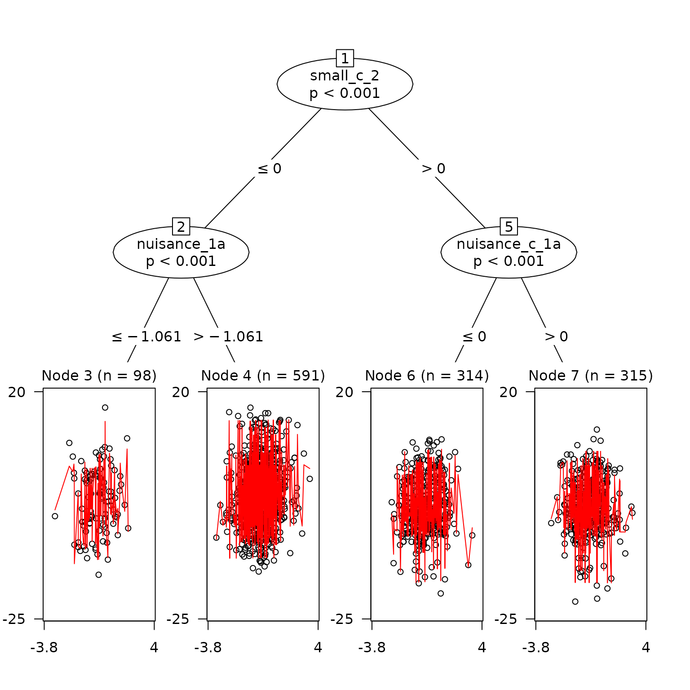

Introduction to {gardenr}
intro-gardenr.RmdExample
Here is an example of using cross_validate_it() to help with hyperparameter tuning.
Simulate some data
Here’s a function within the package to simulate some multilevel data. It has defaults, but these can be changed. use ?sim_multilevel() for details. I made the standard deviation of residual variance large in the example at both level 1 and level 2 to make the difference between default hyperparameters and tuned models more dramatic.
dat <- sim_multilevel(residual_var_sd_1 = 2, residual_var_sd_2 = 6)Split Data & Make CV Object
Wherever possible, I wanted to rely on good functions from the tidymodels framework. We can use rsample to spit the data and make a cross-validation object.
example_split <- rsample::initial_split(dat)
example_train <- rsample::training(example_split)
example_test <- rsample::testing(example_split)
cv <- rsample::vfold_cv(data = example_train, v = 10)Make a Formula object
This is the proposed GLMM tree formula. This is not a normal formula object, but a Formula object instead. See ?Formula::as.Formula for an explanation of the differences.
ex_formula <-
Formula::as.Formula(
'outcome ~ small_1 |
(1 | id_vector) |
small_2 + small_c_1 + small_c_2 + nuisance_1a + nuisance_c_1a'
)Make a Tuning Grid
We can then use dials to make a tuning grid. Notice that the parameter objects for GLMM trees have already been made and are in gardenr (e.g., alpha_par())
tuning_grid <-
dials::grid_max_entropy(
maxdepth_par(maxdepth_min = 2L, maxdepth_max = 20L),
alpha_par(alpha_min = 0.10, alpha_max = 0.001),
trim_par(trim_min = 0.01, trim_max = 0.5),
size = 10
)
tuning_grid
#> # A tibble: 10 × 3
#> maxdepth_par alpha_par trim_par
#> <int> <dbl> <dbl>
#> 1 13 0.0996 0.402
#> 2 19 0.0548 0.0993
#> 3 14 0.00564 0.0229
#> 4 10 0.0447 0.158
#> 5 19 0.00537 0.273
#> 6 11 0.0116 0.453
#> 7 15 0.0476 0.334
#> 8 2 0.0664 0.471
#> 9 12 0.0811 0.0343
#> 10 3 0.0837 0.0433Fit the Model to the Cross-Validated Data
Here we fit the model to the cross-validated object.
fitted <-
cross_validate_it(
cv_obj = cv,
seed = 713,
tuning_grid = tuning_grid,
mod_formula = ex_formula,
cluster = id_vector
)See Best Fitting Hyperparameters
best_fit <-
fitted %>%
arrange(mean_rmse)
best_fit
#> # A tibble: 10 × 8
#> grid_index maxdepth_par alpha_par trim_par mean_rmse se_rmse mean_mae se_mae
#> <int> <int> <dbl> <dbl> <dbl> <dbl> <dbl> <dbl>
#> 1 10 3 0.0837 0.0433 2.05 0.0352 0.0125 1.80e-4
#> 2 6 11 0.0116 0.453 2.05 0.0350 0.0124 1.90e-4
#> 3 8 2 0.0664 0.471 2.05 0.0365 0.0125 1.97e-4
#> 4 5 19 0.00537 0.273 2.06 0.0366 0.0125 2.03e-4
#> 5 3 14 0.00564 0.0229 2.07 0.0358 0.0125 1.96e-4
#> 6 4 10 0.0447 0.158 2.07 0.0344 0.0125 1.85e-4
#> 7 2 19 0.0548 0.0993 2.07 0.0328 0.0126 1.76e-4
#> 8 7 15 0.0476 0.334 2.07 0.0367 0.0125 1.99e-4
#> 9 1 13 0.0996 0.402 2.08 0.0356 0.0126 1.93e-4
#> 10 9 12 0.0811 0.0343 2.08 0.0336 0.0126 1.86e-4
best_fit_trained <-
lmertree(
data = example_train,
formula =
ex_formula,
maxdepth = best_fit$maxdepth_par[1],
alpha = best_fit$alpha_par[1],
trim = best_fit$trim_par[1],
cluster = id_vector,
verbose = TRUE
)
#> 'log Lik.' -3015.466 (df=4)
#> 'log Lik.' -3011.777 (df=10)
#> 'log Lik.' -3011.777 (df=10)See Splits as Plot
plot(
best_fit_trained,
which = 'tree',
)
plot(
best_fit_trained,
which = 'tree.coef',
)Compare this to a tree with default hyperparameters
It’s clear that this tree has made many more splits than the trained model.
untrained <-
lmertree(
data = example_train,
formula =
ex_formula,
cluster = id_vector,
verbose = TRUE
)
#> 'log Lik.' -3015.466 (df=4)
#> 'log Lik.' -3009.867 (df=16)
#> 'log Lik.' -3004.441 (df=18)
#> 'log Lik.' -3003.055 (df=18)
#> 'log Lik.' -3004.441 (df=18)
#> 'log Lik.' -3003.055 (df=18)
plot(
untrained,
which = 'tree'
)
plot(
untrained,
which = 'tree.coef',
)Get RMSE for unseen data
We see here that the model fits unseen data slightly better than the model with default hyperparameters.
example_test %>%
mutate(
predictions_tuned =
predict(
best_fit_trained,
newdata = .,
allow.new.levels = TRUE
),
predictions_default_hyperparams =
predict(
untrained,
newdata = .,
allow.new.levels = TRUE
),
) %>%
summarize(
tuned_RMSE =
rmse(observed_y = outcome, predicted_y = predictions_tuned),
default_hyperparams_RMSE =
rmse(observed_y = outcome, predicted_y = predictions_default_hyperparams)
)
#> tuned_RMSE default_hyperparams_RMSE
#> 1 2.020963 2.044691